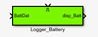
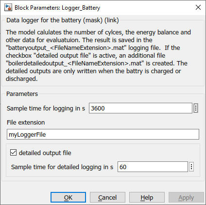

Logger_Battery
Path: Carnot/Outputs/Logger
Purpose
Creates data files which enable to evaluate the
battery model of the Carnot blockset by using
cs_energy_battery
m-function.
Inputs:
- BattDat (data bus of the battery)
- Enable : "true" or "1" activates the logging of the data in the
files
Output:
- disp_Batt : displaying data of battery
- files : "batteryoutput_extension.mat" and "batterydetailoutput_extension.mat"where
extension is a string you can choose in the parameters of the block.
The file contains the following information in timeseries. The timeseries
appear in a structure with the variable "batt".
- EnergySetpointCharge : AC energy charged at setpoint in J
- EnergySetpointDisarge : AC energy discharged at setpoint in J
- EnergyChargeAC : energy charged at AC connection in J
- EnergyDischargeAC : energy discharged at AC connection in J
- EnergyChargeDC : energy charged on DC side (into the cell) in J
- EnergyDischargeDC : energy discharged on DC side (from the cell) in J
- Energy_Excess : energy excess (which could not be stored, typically sent
to grid) in J
- Energy_Deficit : energy deficit (which could not be deliverey by the
battery, typically taken from grid) in J
- Energy : energy in the battery in J
- SOC : state of charge
- Capacity: capacity of the batter in J
- Time_Charging duration of charging in s
- Time_Discharging duration of discharging in s
- Cycles_Charging number of charging cycles
- Cycles_Discharging number of discharging cycles
For a full list of data point names see
2_Basic_Concepts.
Parameters and Dialog Box

The file "batterydetailoutput_extension.mat" is only written
if the parameter "detailed output" is activated. Detailed outputs
are written with a 60 s timestep only if the battery is charged or discharged.
Characteristics
Direct Feedthrough Yes
Sample time entered
by user in block parameters
Vectorized No